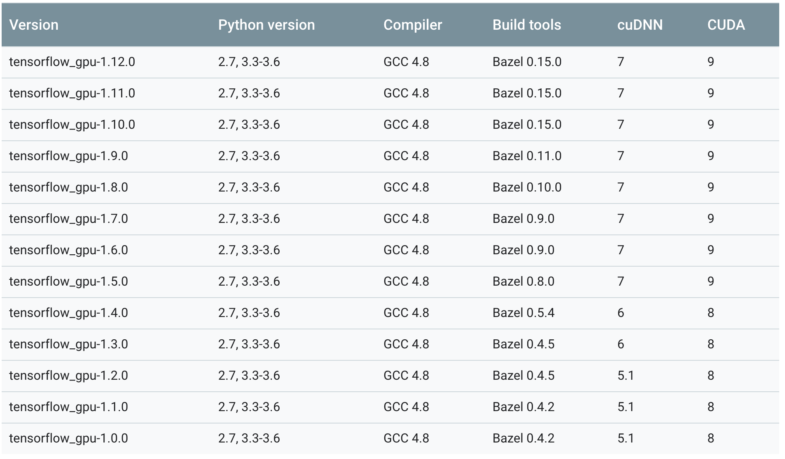

在使用GPU之前, 必須先安裝許多套件
像是 tensorflow-gpu, cuda, CuDNN
但是這些套件之間有版本上的限制
查詢套件在電腦上的版本
cuda version
1 | $ nvcc --version |
or1
$ cat /usr/local/cuda/version.txt
CuDNN version
1 | $ cat /usr/local/cuda/include/cudnn.h | grep CUDNN_MAJOR -A 2 |
tensorflow-gpu version
1 | $ pip list | grep tensorflow |
相對應的版本清單
